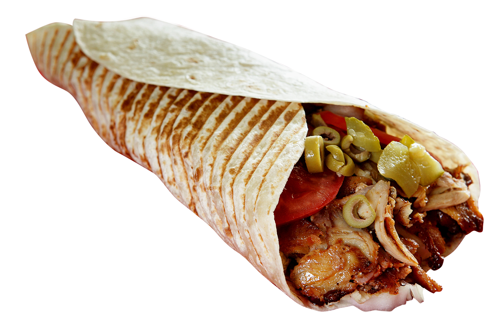
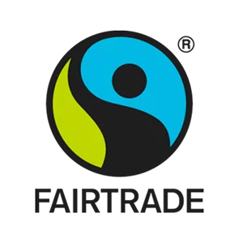

DönerZaam™
De Eerlijke Draai

Werking binnen Ons Bedrijf
Bij Dürerzaam geloven we dat een gelukkige werknemer de beste broodjes vouwt. Geen uitbuiting of nachtwerk onder erbarmelijke omstandigheden, maar echte focus op kwaliteit en duurzaamheid.
- Eerlijk Loon: Iedereen verdient minstens 110% van het minimumloon, inclusief volledige avond- en weekendtoeslagen.
- Balans & Werktijden: Geen gapende shifts tot 05:00 uur 's nachts. Onze zaken sluiten om 23:00 uur om de nachtrust en het sociale leven van het personeel te beschermen.
- De Dürerzaam Academy: We investeren in de ontwikkeling van onze medewerkers door middel van opleidingen en trainingen.
- Veligheid Eerst: De veiligheid van onze medewerkers is onze prioriteit. Onze werkers dragen geavanceerde, hittebestendige bescherming bij de grillspiezen.
Millieuvriendelijkheid
Onze toewijding aan duurzaamheid gaat verder dan onze werknemers. We streven ernaar om onze ecologische voetafdruk te minimaliseren en een positieve impact op het milieu te hebben.
- Groene Energie: Onze winkels worden aangedreven door 100% hernieuwbare energiebronnen.
- Afvalbeheer: We implementeren een uitgebreid recyclingprogramma en streven naar zero waste in onze operaties.
- Duurzame Verpakkingen: Al onze verpakkingen zijn gemaakt van biologisch afbreekbare of gerecyclede materialen.
- Lokale Inkoop: We werken samen met lokale leveranciers om de transportafstanden te verkorten en de lokale economie te ondersteunen.
Eerlijke Handel
Wij geloven in eerlijke en transparante handelspraktijken. Door samen te werken met lokale producenten en fair-trade leveranciers, zorgen we voor eerlijke lonen en goede arbeidsvoorwaarden in de hele keten.
- Lokale Samenwerking: We werken nauw samen met lokale boeren en leveranciers om de kwaliteit van onze ingrediënten te waarborgen en de lokale economie te ondersteunen.
- Fair-Trade Certificering: Al onze koffie, thee en chocolade zijn afkomstig van fair-trade gecertificeerde bronnen.
- Transparantie: We delen openlijk informatie over onze leveranciers en de herkomst van onze ingrediënten met onze klanten.

De Omgeving & De Maatschappij
We zijn toegewijd aan het ondersteunen van onze gemeenschap en het bijdragen aan een betere samenleving.
- Inclusiviteit: We streven naar een inclusieve werkomgeving waar diversiteit wordt gevierd en iedereen zich welkom voelt.
- Onderwijs & Bewustwording: We bieden educatieve programma's aan om bewustzijn te creëren over duurzaamheid en eerlijke handel bij onze klanten en de bredere gemeenschap.